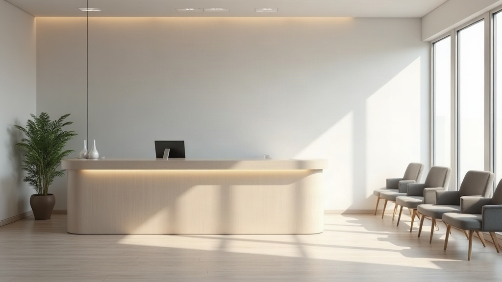

Chrome direction A
A stand-in band, here so the bar can be judged transparent over a dark hero and solid on scroll. The page body is not part of this concept.
Scroll past the hero and the bar takes its solid state: glass, a hairline rule, and a shadow that only appears once there is content behind it.
Booking
Call the practice and we will find you a time.
Appointments are made by telephone or by email. There is no online booking, so nothing is waiting behind a form: you speak to reception and you leave with a time.